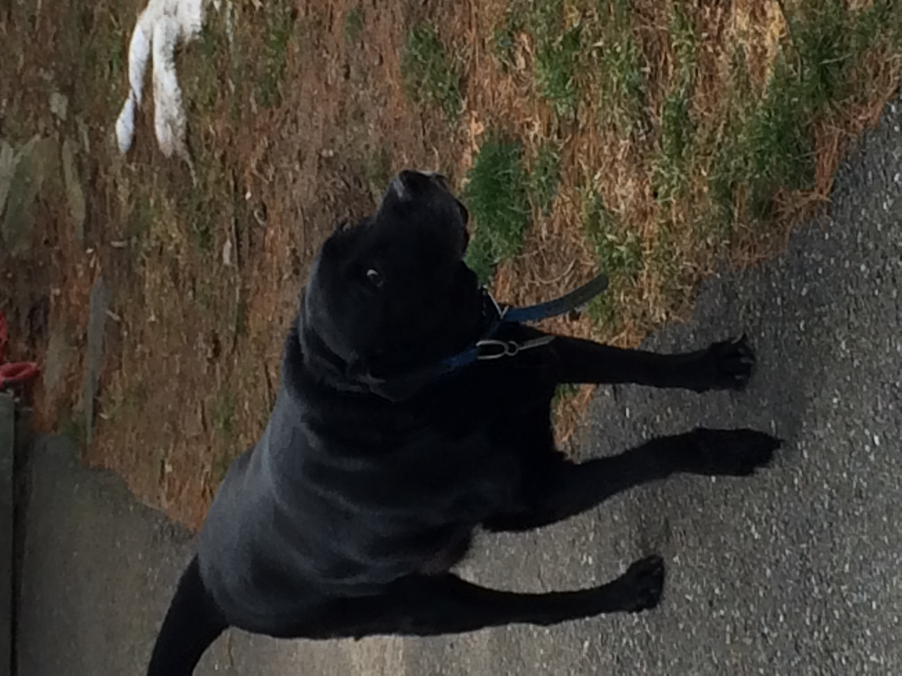
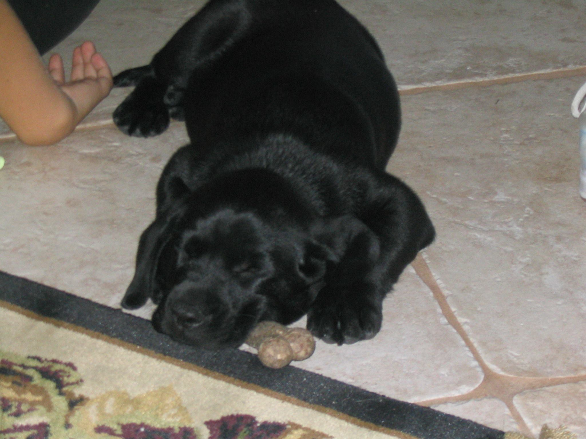
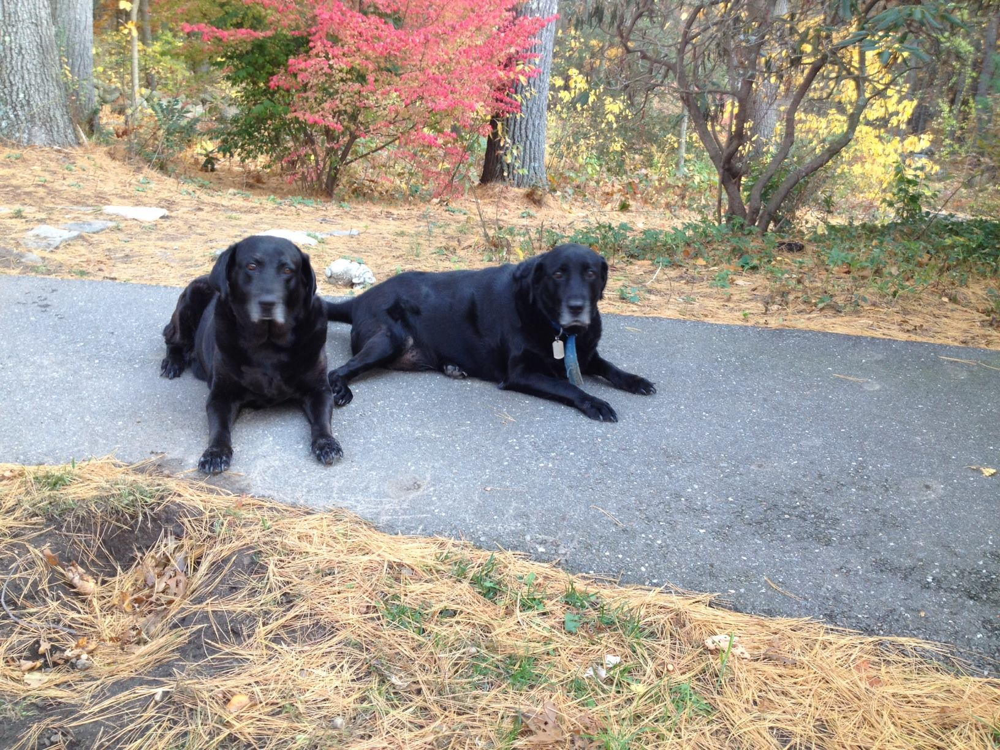

Scout
Pure-Bred English Black Lab
Scout was the longest-lived dog in our family, and definitely the most cherished animal I believe our family ever had and ever will own. He was a hulking behemoth of a Black Lab, the largest our vet had ever seen. He had streaks of rebelliousness interspersed with deeply ingrained fierce loyalty and unconditional love for the family. We got him early on in Austin, Texas, as a very young puppy when he was no larger than the size of his head as an adult. Initially his name was Batman, but we quickly changed that on the car ride home. Scout had an amazing personality and many quirks that made him unique as a dog, it would be impossible for me to tell his history in this site nor can I possibly convey the complexity that was Scout. One quirk that he had until the end of his days was his excitement for food; whenever it was feeding time he would get so excited with anticipation that he would jump up and down, a 100+ pound black lab even in his arthritic old age would still raise himself up onto his hind legs like a bucking bull repeatedly for food. The food was never anything special either, he would always be excited though even for plain old kibble.
About mid-way through our stint in Texas, we got a second Black Lab named Maggie. She and Scout got along famously, though less so in a romantic way and moreso in a competitive yet-equal members of the pack. They never had any romantic interests as far as we could tell, but they were almost always together and got along very well. Though there was always the expectation where if one got pet, so did the other.
Scout, in his twilight years, could best be described as a crotchety old 'man' with a heart of gold. He was always reluctant to be around smaller dogs, but he warmed up really well to Zoey after an initial period of giving her the cold shoulder. The two became best friends until the end.